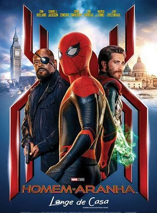

 | |
Sobre o filme | |
| • Lançamento: 4 de julho de 2019 No cinema | 2h 10min | Aventura, Ação | |
| • Direção: Jon Watts | Roteiro Chris McKenna, Erik Sommers | |
| • Elenco: Tom Holland, Jake Gyllenhaal, Zendaya | • Título original: Spider-Man: Far From Home |
Crítica de Homem-Aranha: Longe de casa
• Sinopse:
Em Homem-Aranha: Longe de Casa, Peter Parker (Tom Holland) está em uma viagem de duas semanas pela Europa, ao lado de seus amigos de colégio, quando é surpreendido pela visita de Nick Fury (Samuel L. Jackson). Precisando de ajuda para enfrentar monstros nomeados como Elementais, Fury o convoca para lutar ao lado de Mysterio (Jake Gyllenhaal), um novo herói que afirma ter vindo de uma Terra paralela. Além da nova ameaça, Peter precisa lidar com a lacuna deixada por Tony Stark, que deixou para si seu óculos pessoal, com acesso a um sistema de inteligência artificial associado à Stark Industries.
• Crítica
Há várias formas de se analisar Homem-Aranha: Longe de Casa. A primeira delas, e mais urgente para os fãs, é em relação às consequências diretas dos eventos mostrados em Vingadores: Ultimato. Neste aspecto, os primeiros 10 minutos são essenciais: a partir de um hilário vídeo gravado por alunos da escola de Peter Parker é apresentada não apenas uma homenagem aos heróis mortos como, também, um panorama geral da sociedade neste oito meses após o retorno de metade dos seres vivos do planeta. Tempo não só para que o espectador se adapte a esta nova realidade - e conhecer o blip - mas, também, para se divertir com as (boas) piadas rápidas envolvendo os alunos, tia May e Happy Hogan. A segunda forma passa pelo enigmático Mysterio, em duas ramificações distintas. Há o lado ma... [Ler a crítica completa]